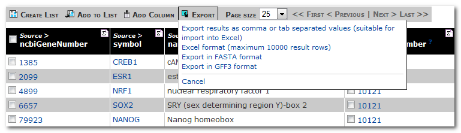

The results table for the template 'Gene(s) --> Upstream Transcription Factors' shows the source genes and their target genes which are your query genes.
![[Results table]](results_r11.png)
Summary buttons ![[icon]](summary_maths.png) at the top of each column allow you to view some summary statistics.
For names and identifiers it will tell you about unique values, numerical data gives the min, max, mean and standard deviation.
at the top of each column allow you to view some summary statistics.
For names and identifiers it will tell you about unique values, numerical data gives the min, max, mean and standard deviation.
Click the summary button for the column 'Source > ncbiGeneNumber'
The table shows the most commonly occurring transcription factors which target your query gene:
![[Summary table]](summary_table.png)
All results pages have a number of export options:
